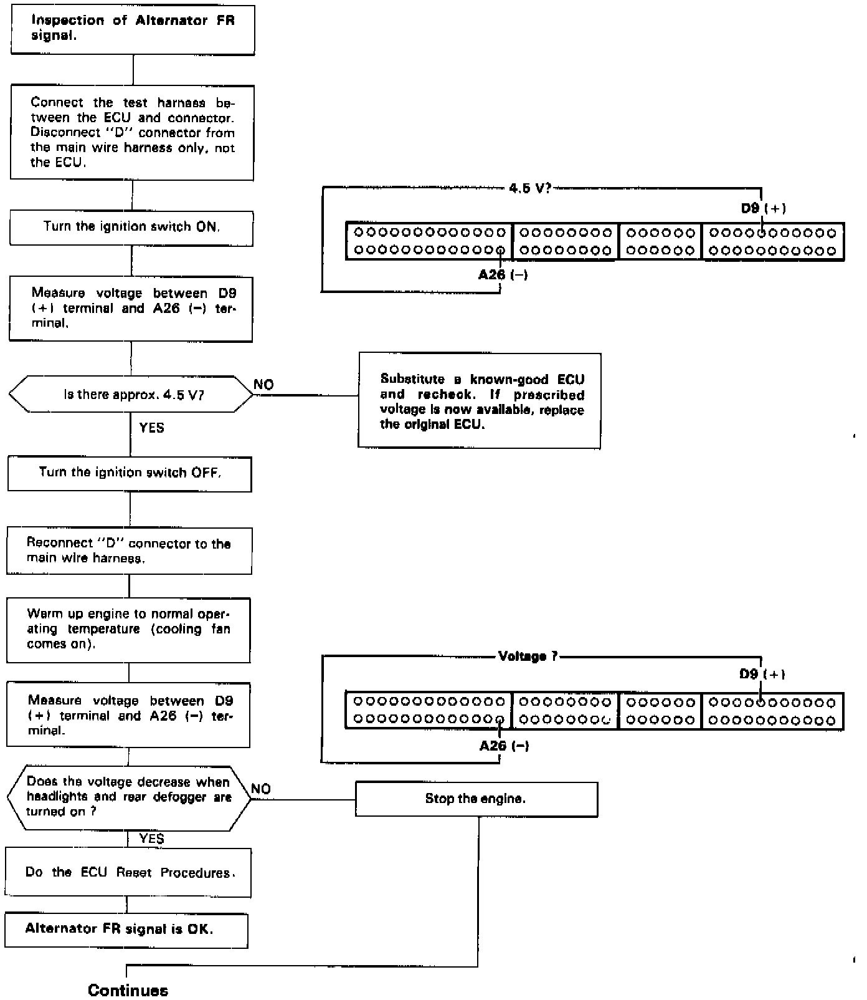
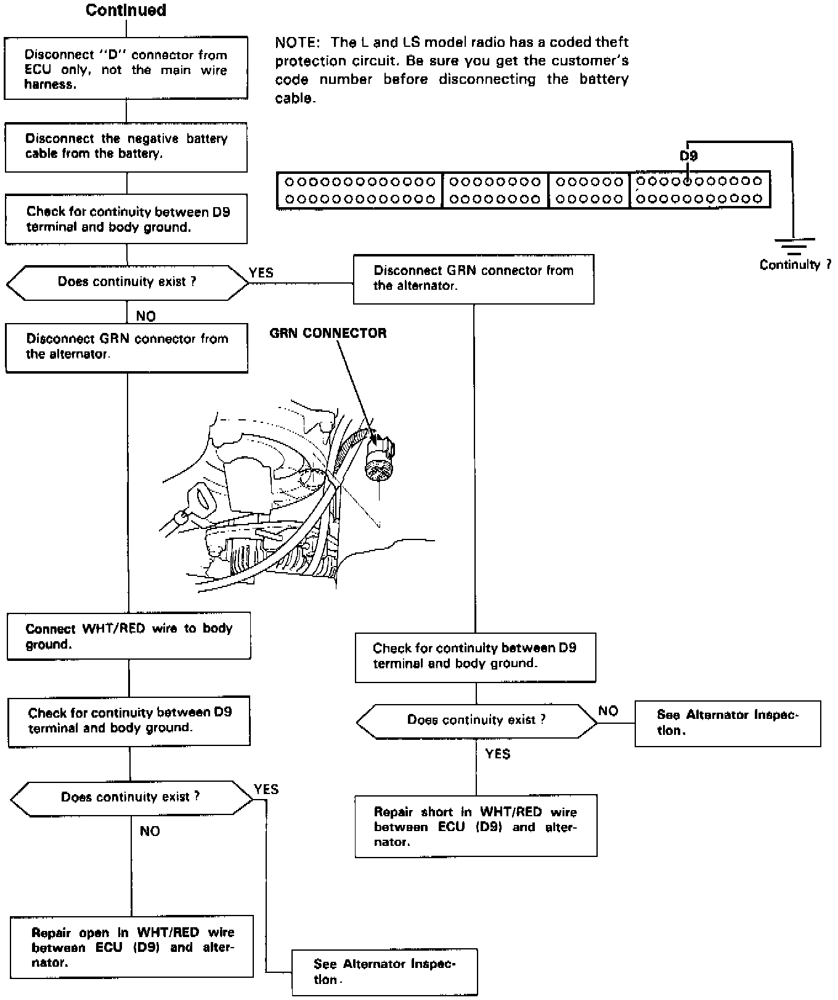

Operation CHARM
: Car repair manuals for everyone.
Home
>>
Acura
>>
1992
>>
Legend Coupe V6-3206cc 3.2L SOHC FI
>>
Repair and Diagnosis
>>
Powertrain Management
>>
Computers and Control Systems
>>
Testing and Inspection
>>
Component Tests and General Diagnostics
>>
Alternator FR Signal Circuit Troubleshooting
Alternator FR Signal Circuit Troubleshooting
ALTERNATOR FR SIGNAL

PART 1 OF 2

PART 2 OF 2
This signals the
ECU
when the alternator is charging.